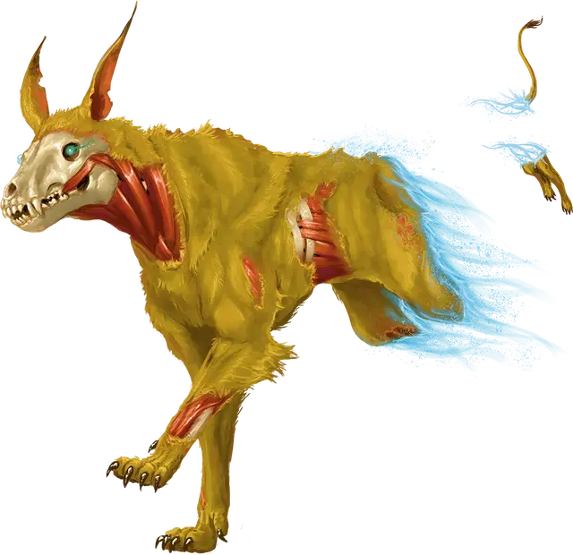

Гончая разоритель
Harrow Hound
Средняя Нежить, законно-добрая

Класс Доспеха 15 (природный доспех)
Хиты 45 (6к8 + 18)
Скорость 40 футов
| мод | спас | ||
|---|---|---|---|
| СИЛ | 12 | +1 | +1 |
| ЛОВ | 17 | +3 | +3 |
| ТЕЛ | 12 | +1 | +1 |
| мод | спас | ||
|---|---|---|---|
| ИНТ | 10 | +0 | +0 |
| МДР | 13 | +1 | +1 |
| ХАР | 11 | +0 | +0 |
Навыки Восприятие +3, Скрытность +5
Чувства пассивное Восприятие 13
Языки понимает Сильван, но не говорит, Язык Мерцающих псов
Опасность 3 (700 опыта)
Бонус мастерства +2
Особенности
Тактика стаи. Гончая совершает с преимуществом броски атаки по существу, если как минимум один союзник гончей находится в пределах 5 футов от этого существа, и этот союзник дееспособен.
Сверхъестественный следопыт. Гончая знает расстояние и направление движения любого существа, которое приближалось к ней на расстояние 30 футов, даже если это существо находится на другом плане существования. Если существо, за которым охотится гончая, умирает, она узнаёт об этом.
Действия
Укус. Рукопашная атака оружием: +5 к попаданию, досягаемость 5 футов, одна цель. Попадание: 10 (2к6 + 3) колющего урона плюс 3 (1к6) урона некротической энергией. Если целью является существо, оно должно преуспеть в спасброске Силы Сл 13 иначе упадёт ничком.
Бонусные действия
Теневой шаг (перезарядка 4–6). Гончая магическим образом телепортируется вместе со всем несомым и носимым снаряжением, на расстояние до 40 футов в свободное пространство, которое он видит.
Описание
Когда Зловещие разорители впервые обнаружили демиплан фей, известный как Сады наслаждения, это место было домом для большой популяции мерцающих псов. Не-живые захватчики перебили мерцающих псов и поселились в садах, навсегда преобразив демиплан. Со временем некротическая магия Зловещих разорителей оживила трупы мерцающих псов, превратив их в первых Гончих разорителей.
У Зловещие разорителей гончие разорителей используются в качестве следопытов и компаньонов. Гончие разорители особенно полезны при расследовании возможных случаев обнаружения колоды многих вещей [deck of many things]. Если гончая разорителей учует запах своей добычи, она никогда не потеряет его, даже если гончая и ее товарищи-охотники вернутся в Сады Распада с неудачной охоты. Могущественную нежить, такую как вампиры и рыцари смерти, могут сопровождать стаи гончих разорителей.